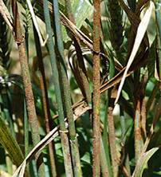
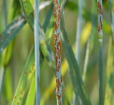

WHEAT :: MAJOR DISEASES :: BLACK OR STEM RUST
Black or stem rust - Puccinia graminis tritici
Symptoms
Symptoms are produced on almost all aerial parts of the wheat plant but are most common on stem, leaf sheaths and upper and lower leaf surfaces. Uredial pustules (or sori) are oval to spindle shaped and dark reddish brown (rust) in color. They erupt through the epidermis of the host and are surrounded by tattered host tissue. The pustules are dusty in appearance due to the vast number of spores produced. Spores are readily released when touched.
{kind=link}
|  |  |
Symptoms |
|
As the infection advances teliospores are produced in the same pustule. The color of the pustule changes from rust color to black as teliospore production progresses. If a large number of pustules are produced, stems become weakened and lodge. The pathogen attacks other host (barberry) to complete its life cycle. Symptoms are very different on this woody host. Other spores are Pycnia (spermagonia) produced on the upper leaf surface of barberry which appears as raised orange spots. Small amounts of honeydew that attracts insects are produced in this structure. Aecia, produced on the lower leaf surface, are yellow. They are bell-shaped and extend as far as 5 mm from the leaf surface.